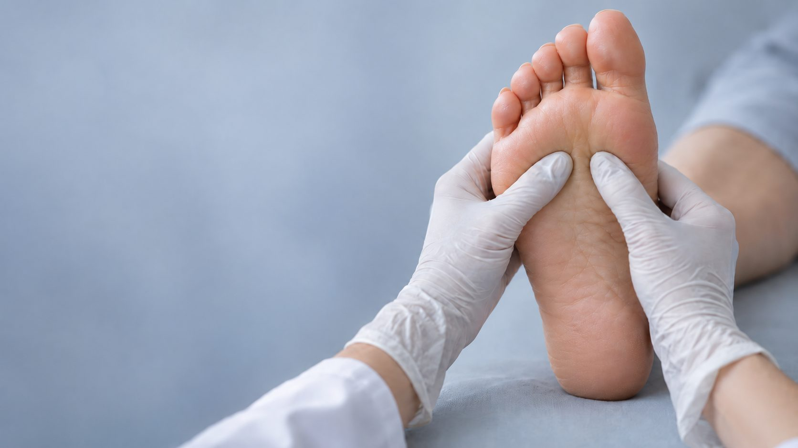

Revisión periódica, control del riesgo y prevención de úlceras
La diabetes puede reducir la sensibilidad del pie y la circulación que llega a él. Cuando eso ocurre, una rozadura, una dureza o un corte al cortar las uñas pueden pasar desapercibidos y convertirse en una úlcera de difícil curación.
El objetivo de la consulta es sencillo: que eso no ocurra. Valoramos el riesgo de tu pie, tratamos las lesiones antes de que se compliquen y realizamos el cuidado de uñas y durezas de forma segura, con material estéril de un solo uso.
Trabajamos en coordinación con tu médico y tu enfermera, y te enseñamos qué revisar en casa cada día. La revisión periódica del pie es la medida más eficaz para prevenir complicaciones.
Exploración de la sensibilidad del pie y de los pulsos para conocer tu nivel de riesgo y la frecuencia de revisión que necesitas.
Revisamos hidratación, grietas, hongos y las zonas donde el pie está soportando más carga de la que debería.
Corte de uñas y retirada de durezas con técnica atraumática. Nunca debes tratar callos por tu cuenta ni con productos abrasivos.
Protecciones de silicona y plantillas de descarga para eliminar la presión que puede acabar en úlcera.
Comprobamos costuras, holguras y desgastes: la mayoría de las lesiones empiezan dentro del zapato.
Pautas claras de autocuidado diario y un calendario de revisiones ajustado a tu riesgo.
Si tienes diabetes, revisa tus pies al menos una vez al año.
968 23 19 64